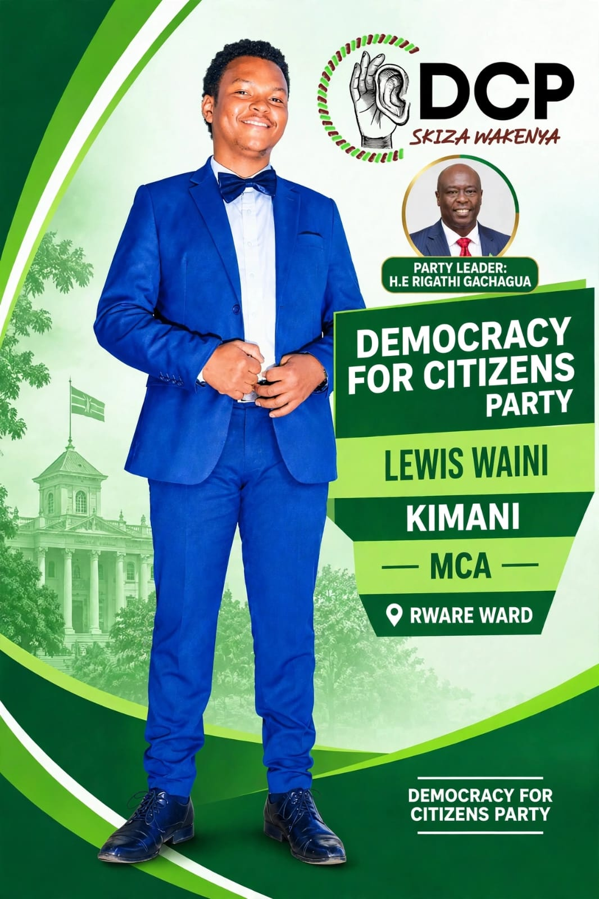

Youth & Opportunity
Encourage skills development, mentorship, entrepreneurship, and access to opportunities for young people.
ASPIRING MEMBER OF COUNTY ASSEMBLY
Rware Ward • Nyeri County
Business education. Community focus. A vision for responsible, inclusive local leadership.
Listening to the community.
Working toward shared progress.

Business AdministrationMaster's-level education
Community FocusListening and participation
Local RepresentationRware Ward, Nyeri County
Lewis Waini Kimani is an aspiring Member of County Assembly for Rware Ward in Nyeri County. His Master of Business Administration studies provide a foundation for understanding management, planning, accountability, and the responsible use of resources.
This portfolio presents his professional profile and the community priorities that can guide constructive engagement with residents. Specific experience, achievements, and initiatives can be added as verified details become available.
A SHARED VISION
A vision for a community where residents have a voice, public priorities are discussed openly, and development efforts respond to real local needs.
These are proposed areas for community discussion and public engagement, to be shaped with residents and aligned with the responsibilities of county government.
Encourage skills development, mentorship, entrepreneurship, and access to opportunities for young people.
Listen to learners, families, and educators and support constructive discussion on education and training needs.
Promote transparent conversations about local roads, drainage, public spaces, and other community infrastructure priorities.
Support resident engagement on accessible health services, sanitation, and community wellbeing.
Listen to traders and entrepreneurs and encourage a fair, supportive environment for local enterprise.
Value open communication, responsible oversight, and clear explanations of decisions and public priorities.
The priorities above are proposed discussion areas, not claims of completed projects or guaranteed outcomes.
03 / LEADERSHIP APPROACH
Good representation means hearing different perspectives, asking clear questions, and helping residents understand the decisions that affect their community.
LEWIS WAINI KIMANI
Professional profile · Community priorities · Public service